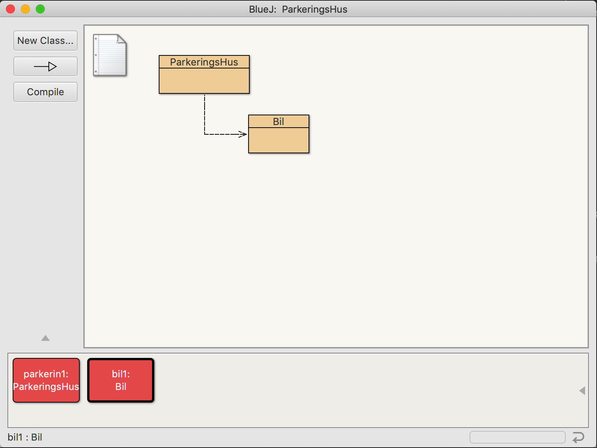
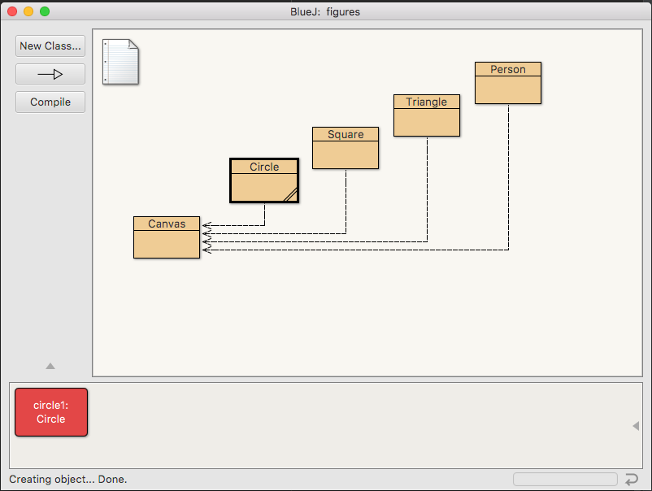

IS-109 - Innleveringsblogg

IS-109: Modul 3 - Flere Objekter
Khai Nguyen, 9. Oktober, 2018
Hva har jeg lært til nå?

IS-109: Modul 1 - BlueJ, Klasser og Objekter
Khai Nguyen, 22. August, 2018
Gjennom modul 1, går vi gjennom med å åpne prosjektet og vise gjennom hva er hva. I prosjektene med diverse bokser, har vi forskjellige klasse som fremhever diverse objekter som vi vil fremstille. Ved å fremstille de forskjellige klassene så kan vi høyre-klikke også skape new "class" som gjør javakodene om til noe pc kan tolke og vise.